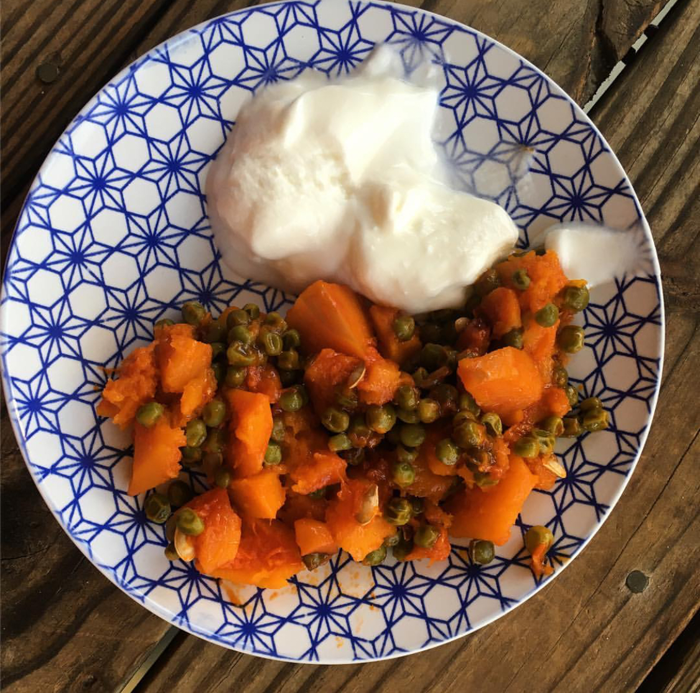
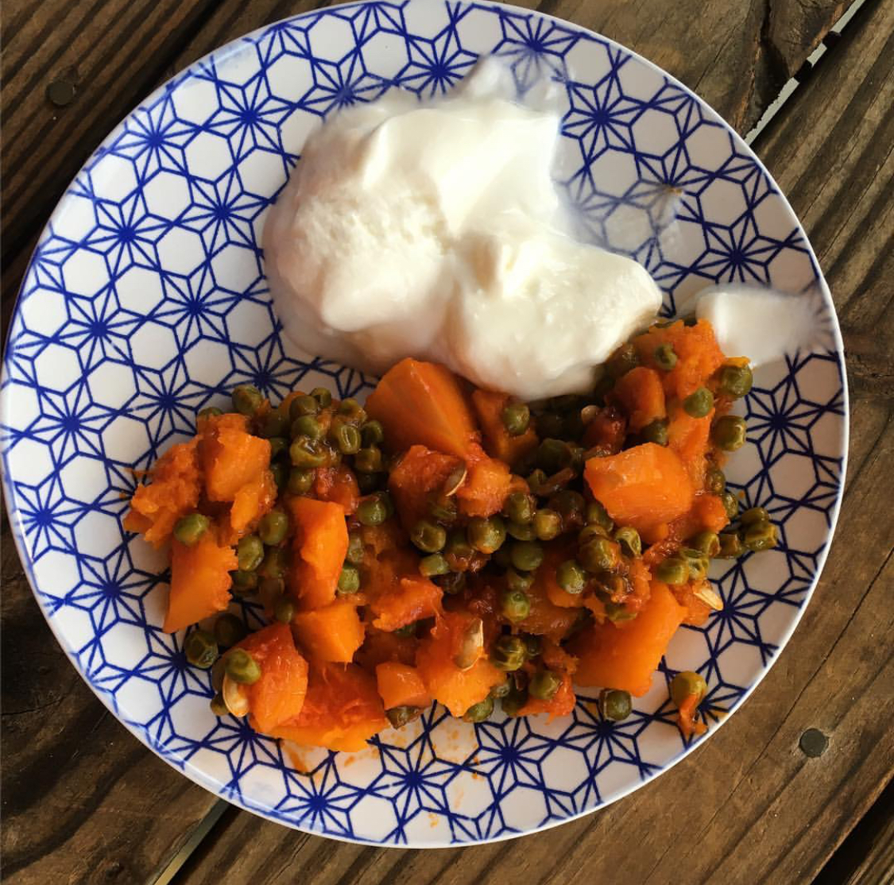
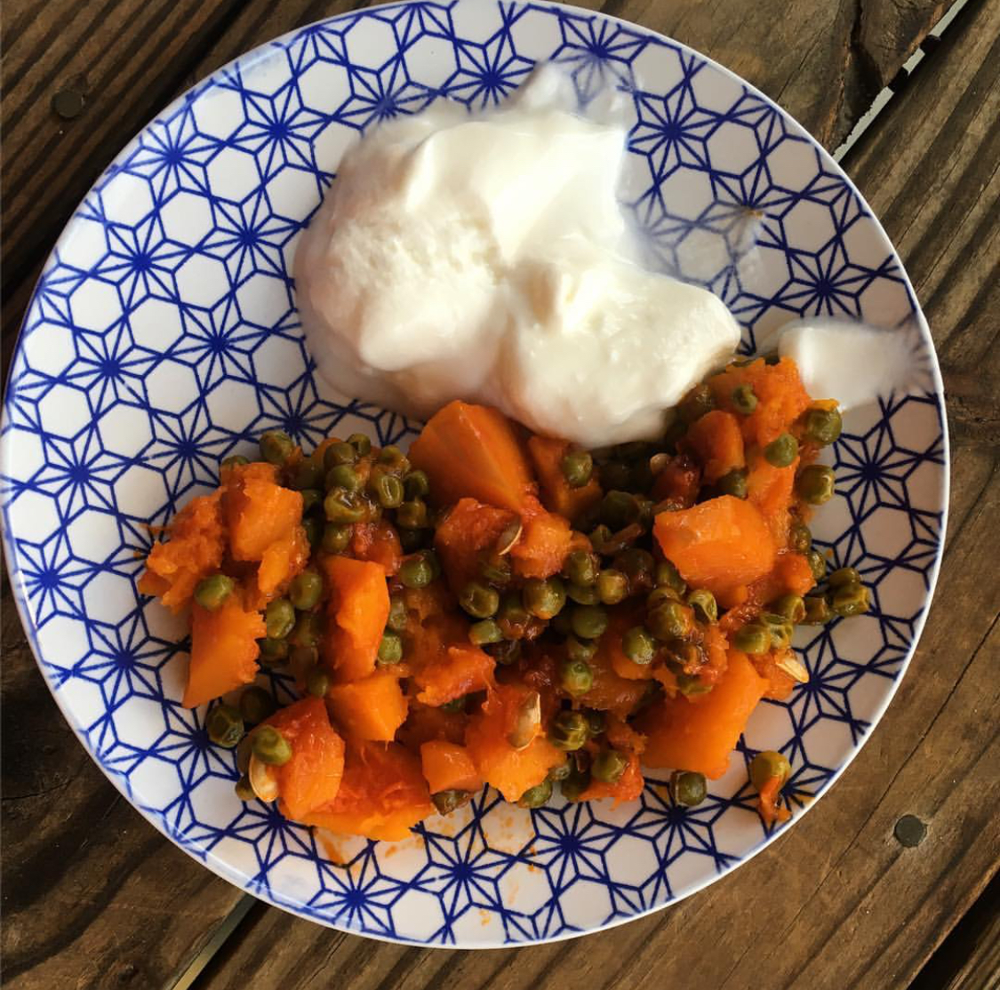

MINDSET GOAL!♡
MY FOOD DIARY
 


Hi I am Ceyda, and you are welcome to my blog that I use as a photo gallery, in which I share my food diary with you! My goal is to emphasize people the benefits of good nutrients! I am interested in both medical area, and computer science. Hopefully you find something helpful for yourself.You can also find my posts on instagram with the hashtag #letfoodbeyourmedicine.
MINDSET GOAL!♡
MY FOOD DIARY
